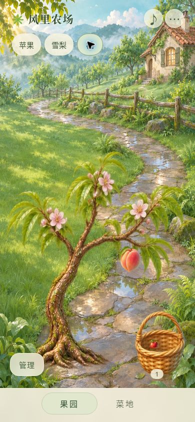
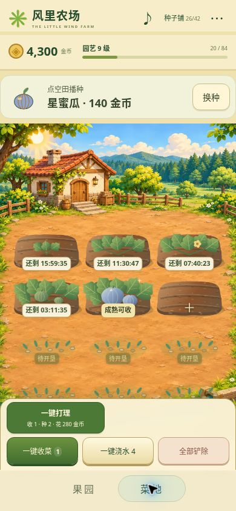
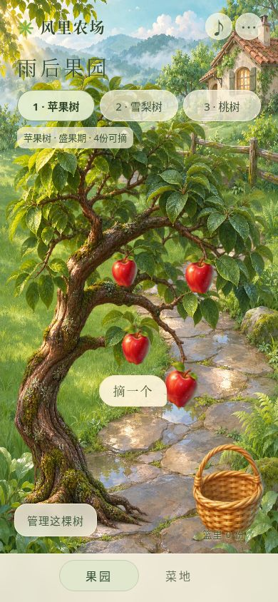
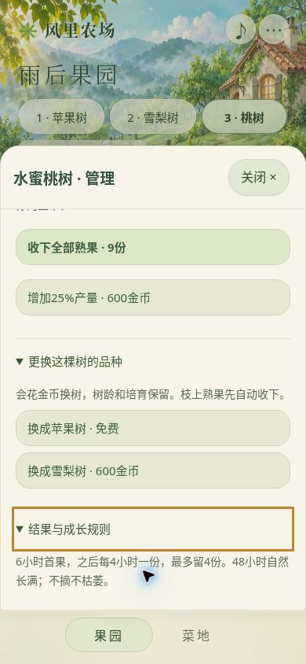
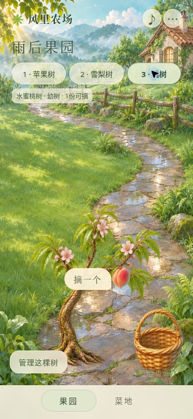
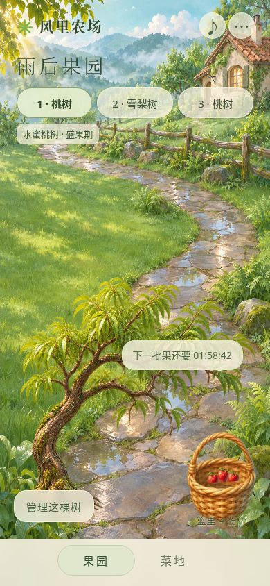

雨后果园
直接进果园
独立示范档，打开就有熟果。正式首页和正式存档保持原样。
rain6 果篮与种子季
桃、李、梨各自升级。摘果拿经验、卖出拿金币；菜地可改良至 Lv.10。种子铺按金币、经验和变异分类。
rain5 实玩截图
果园 · 幼年桃树
菜地 · 星蜜瓜不同阶段
rain4 更新记录
果园收起了重复说明，盛果桃树换上了新的图像。打开新版后，试玩存档一次性加 30,000 金币。菜地默认选已解锁作物中初熟最久的，时长相同优先选种子更贵的。
上一轮操作修复
删除近看；面板滚到底也能关闭，点面板外也能收起。场景直接切换三棵树；管理里才会花钱换品种。桃树使用完整轮廓等比显示。
当前首屏
滚到底仍能关闭
完整幼年桃树
完整盛果期桃树（已摘完）
上一轮18秒录屏（历史）
全新桌面Chromium资料，360×800，30fps，无剪辑或加速。上一轮点果、落篮、菜地往返；其中近看入口已在本轮删除。
上一轮新旧首屏（历史）
上次默认首屏 · 幼苗 本次默认示范 · 可摘苹果
本次默认示范 · 可摘苹果
同视口390×844；两版默认树龄不同，并非同龄树对比。
本次幼苗

npm test、npm run test:farm通过。360／390／412宽度无横向溢出，直接摘果及菜地往返可用。未使用安卓真机，未实测安卓自带浏览器、GPU与弱网。完整改动与验收记录